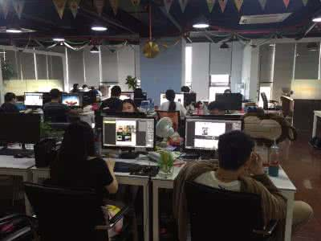

个人简介
专业技能
工作经历
项目经验
自我评价
详情：个人简历当中有运用到fullPage以及jQuery框架布局，运用animation插件的动画效果和c3新增属性transform...
WEB前端工程师
Full-name
：邓杰涛
Birth
：1993年9月2日
Province
：广东省
Major
：WEB前端
Education
：大专
Motto
：命里有时终须有
Major:WEB前端
Full-name:
邓杰涛
Birth:
1993年9月2日
Province:
广东省
Education：大专
Motto：
命里有时终须有
责任心强
学习能力强
健谈
随和
好学
看书

精通HTML、CSS和Javascript网页开发技术。
熟练Dom、Bom操作; 通过ajax和jsonp实现前端与后台进行数据交互，渲染页面。
熟练运用jquery、、bootstrap、面向对象等前端框架
掌握常见的插件如animate.css、fullpage等以提高工作效率。
精通HTML+CSS布局 ，并且能够熟练的运用css3的新增样式
能够处理主流浏览器常见的兼容问题，优化网站性能。
熟练使用Photoshop图形软件，具有良好的配色及审美能力。
具备良好的代码编程习惯及较强的文档编写能力
熟练使用git 、GitHub来进行团队项目开发。
公司名：
仁居信息科技
工作时间：2016.3-2017.3
工作描述:
1、负责Web前端相关专题网页框架搭建、JS交互效果实现
2、负责页面维护、优化，包括代码的调试、bug修复、解决浏览器兼容问题
3、根据产品设计要求和UI效果图，实现产品界面和功能，优化前端页面性能
4、运用HTML5+CSS3+js实现手机端网页开发
项目名称：东方宾馆
官网
项目时间：2016.4-2016.9
项目职责：
1、根据需求设计、输入客户信息，保存到数据库当中；
2、配合相关部门完成专题页面pc端、手机端的开发、更新
3、实现H5页面和css3的交互效果
运用技术： JavaScript、ajax、html5 + css3 、JQuery，swiper
解决难点： 将客户信息提交到后台存储，需要获取客户信息时通过ajax将客户信息从数据库中获取出来，查询客户信息等，定期更新客户信息等；
项目名称：掌上曲美APP
PC端官网
项目时间：2016.10-2017.3
项目职责： 负责将设计图转化成页面，并使用HTML，CSS和Javascript 实现交互效果与UI设计师协作，优化用户交互体验.调试bug.
运用技术： JavaScript、ajax、html5 + css3 、JQuery 、zepto
解决难点： 了解Swiper代码，并分析其css的权重或者Swiper代码的实现的方式，再着手用自己的JavaScript代码去改写Swiper框架带来的固定的样式或者效果，达到满足客户需求的效果；
项目名称：打地鼠游戏
项目时间：2天
项目职责： 自己练习的项目，主要针对js运动框架和递归思想进行练习，维持思维运作。
运用技术： JavaScript、html5 + css3
解决难点：地鼠出现和被打中的时候会有一些不太明显的bug。地鼠出现的个数与地鼠和地鼠之间出现的时间差，如何能让用户不断消灭地鼠的同时，增加一点难度，不至于让用户那么快失去兴趣，经过不断思考和试验，而且在同事的帮助下，找出精确的时间点，解决了该问题。
项目名称：携程APP
项目时间：2天
项目职责： 自己练习的项目。
运用技术： JavaScript、html5 + css3 、APP适配
解决难点： 无缝轮播的实现，需要绑定事件，获取手指位置图，图片在各种移动端中的适应大小
1.性格：个人认为我的性格挺随意的，只要不过分都感觉没啥问题，人与人之间的相处就得随意点，计较太多未免给自己无端平添烦恼；
2.工作时不喜欢拉下一点工作没做完就跑去休息或者干别的东西，总想着做完再去休息；
3.多年的经历，对事认真，责任心强；对人和谐，平易相处；
GitHub作品:
1.仿浏览器博物馆(响应式)
2.仿Janeshop
3.仿Janeshop分页
4.仿聚鲨商城
5.7977game
6.景区评价(APP)
7.AUIPage(APP)